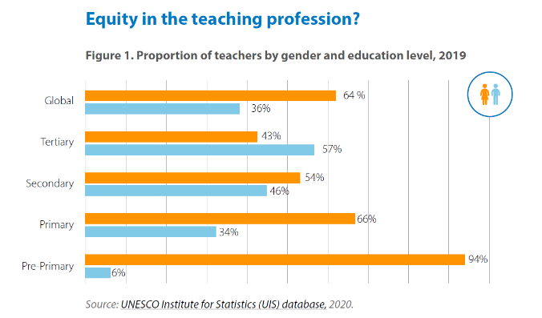
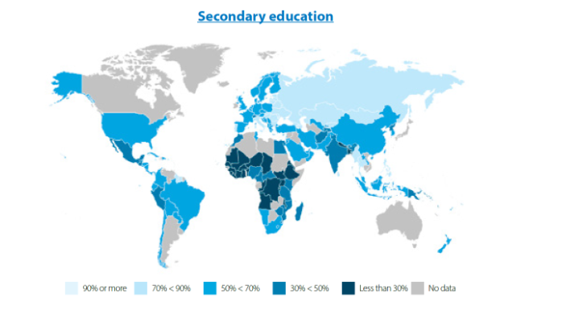
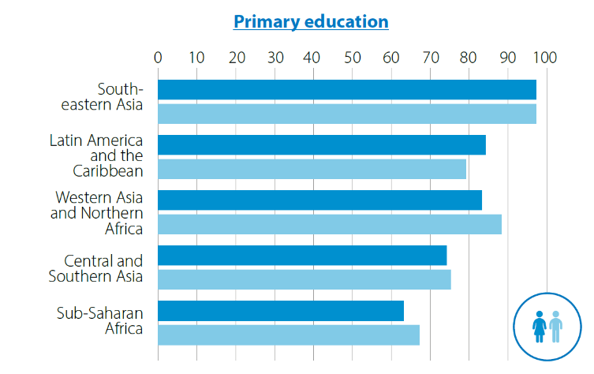

Challenges Faced by Girls & Women
Women and girls across the globe face numerous challenges when it comes to accessing education, especially in developing countries. These barriers include societal expectations, cultural norms, economic hardships, and safety concerns, which often prevent girls from attending or staying in school. In many regions, traditional gender roles prioritize household duties for girls over their education, limiting their ability to gain knowledge and skills that could improve their lives. Additionally, economic instability forces families to prioritize boys' education, leaving girls with fewer opportunities to pursue their studies.
Furthermore, the lack of proper sanitation facilities and issues like early marriage, gender-based violence, and inadequate school infrastructure further exacerbate the educational challenges for girls. The risks of harassment and unsafe travel to schools can also discourage attendance, contributing to higher dropout rates. These challenges not only impact girls' educational progress but also have lasting effects on their potential for economic independence and personal empowerment, perpetuating cycles of poverty and inequality. Overcoming these obstacles requires concerted efforts from governments, organizations, and communities to create inclusive environments where girls and women can thrive.
Key Statistics & Data
Chart 1: Two thirds of the world’s teaching workforce is female

The proportion of women in teaching has grown in the past few decades, and today women make up about two-thirds of the world’s teaching workforce (64 per cent). However, to say that women are dominant in the profession would be an oversimplification; the proportion of female teachers varies with factors such as region, subject, seniority, and education level.
For instance, data from the UNESCO Institute for Statistics show that globally women make up a decreasing proportion of the teaching workforce. While 94 percent of pre-primary educators globally are women, this falls to 66 per cent in primary education, 54 per cent in secondary education and 43 per cent in tertiary education.
In high-income countries, teaching is a predominantly female profession with post-secondary education being the exception. In some parts of Europe, Asia-Pacific, Latin America and the Caribbean, this gender divide is extreme as women make up more than 90 per cent of primary and secondary school teachers.
While women are better represented in many regions, in sub-Saharan Africa, they are underrepresented in primary, secondary, and tertiary teaching standing at 45 per cent, 30 per cent and 24 per cent, respectively. The are the majority in pre-primary education at 80 per cent of all teachers.
Chart 2: In parts of Africa females in secondary education represent fewer than 30% of teachers

Many low-income countries have the opposite imbalance.
This map shows poor female representation in secondary education in Africa. Most countries with very low proportions of women in teaching are found in the Sub-Saharan African region. In Benin, Burkina Faso, Burundi, Chad, Comoros, Côte d’Ivoire, Djibouti, Eritrea, DR Congo, Liberia, Mali, Mauritania, Sierra Leone and South Sudan, for example, fewer than 30 per cent of secondary school teachers are women.
There has been a gradual movement towards gender parity in education systems in lower income regions. And efforts appear to be working. Since 2000, the proportion of women primary school teachers increased from 38 to 53 per cent in Southern Asia and from 42 per cent to 46 per cent in sub-Saharan Africa.
Chart 3: Male and female teachers are almost equal in terms of having achieved the minimum qualifications to teach at each level

On a global scale, male and female teachers are near equal with regards to earning the necessary qualifications to teach at all levels. Yet there are significant gender disparities in a number of areas.
For example, in Sub-Saharan Africa, where just 65 per cent of primary and 51 per cent of secondary school teachers have the minimum required qualifications to teach, men comprise a slightly larger proportion of primary school teachers with the minimum required qualifications.
In some countries in sub-Saharan Africa however, female primary school teachers are more likely to have earned their qualifications than their male colleagues.
Yet despite being more likely to be qualified, women teachers still face inequality when entering the workforce.
In some cases, this disparity is particularly significant. Around 73 per cent of female primary school teachers in Sierra Leone had the minimum required qualifications compared with 59 per cent of male teachers.
The overrepresentation of men in teaching across sub-Saharan Africa may suggest that a lack of qualifications presents a greater barrier to women entering teaching than men with the same qualifications in some countries.
How to Get Involved
Get InvolvedLearn how you can support initiatives for gender equality in education through donations, volunteering, and spreading awareness.